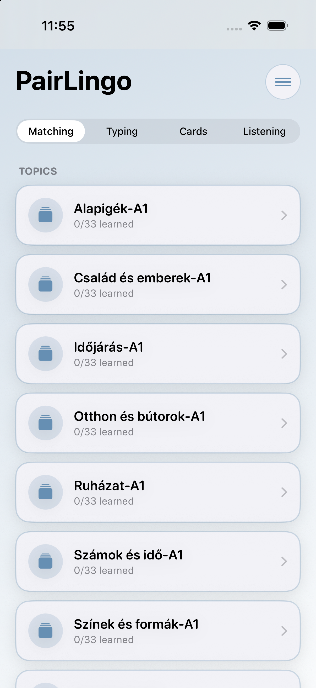
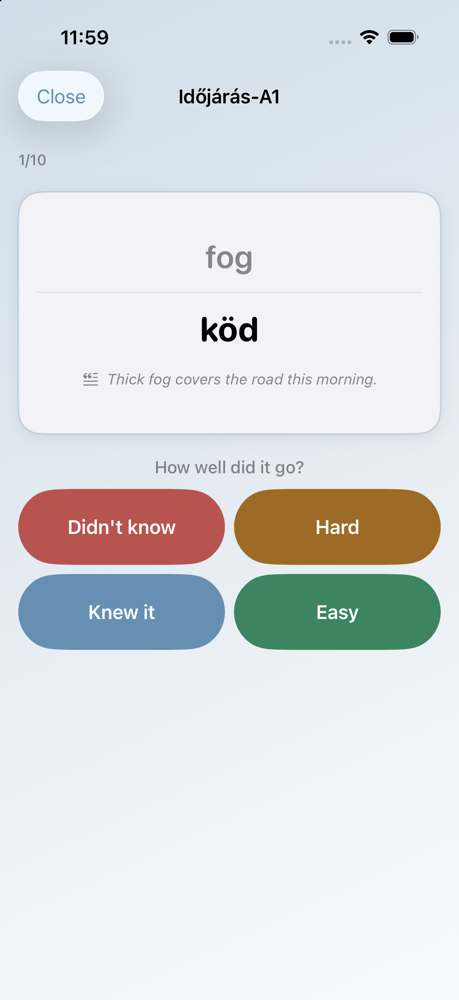
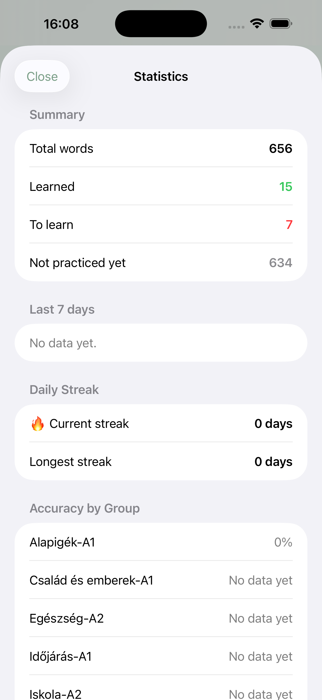
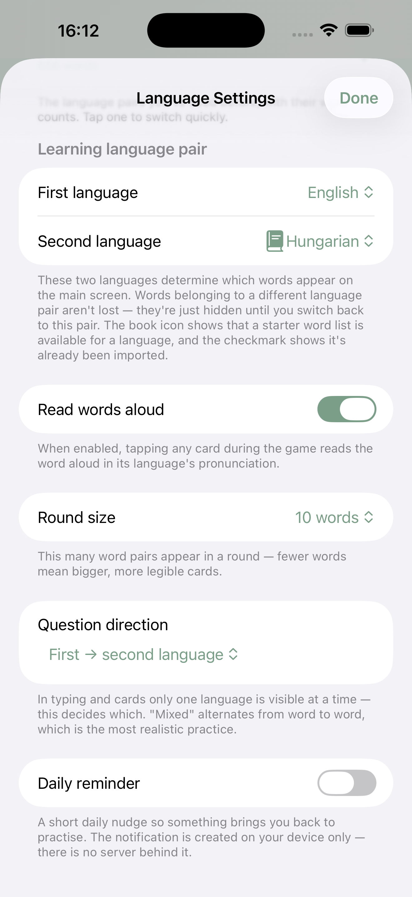

PairLingo
Bármilyen nyelvpár tanulása, a saját tempódban, a saját szavaiddal — nem egy sablon szókártya-app.
Learn any language pair, at your own pace, with your own words — not a template flashcard app.
Amiben tényleg más
Nem egy újabb sablon szókártya-app — nyolc dolog, amiben a PairLingo tényleg különbözik.
What actually sets it apart
Not just another template flashcard app — eight things PairLingo genuinely does differently.
Valóban tetszőleges nyelvpár
Nem csak angol–magyar. Bármelyik két nyelvet kombinálhatod — spanyol–japán, német–orosz, vagy bármi mást, amit tanulsz.
Truly any language pair
Not just English–Hungarian. Combine any two languages — Spanish–Japanese, German–Russian, whatever you're learning.
Okos CSV-import
Felismeri, ha egy szó fordítása megváltozott, figyelmeztet a hasonló nevű duplikált csoportokra, és soronként rád bízza, mit tegyen az ütköző szavakkal.
Smart CSV import
Detects when a word's translation changed, warns about accidentally-duplicated groups, and lets you decide row by row how to resolve conflicts.
Igazi adatvédelem
Nincs backend szerver, nincs fiókregisztráció, nincs hirdetés. A szavaid a saját iCloud-fiókodban szinkronizálódnak — a fejlesztőnek fizikai lehetősége sincs hozzáférni.
Real privacy
No backend server, no account, no ads. Your words sync through your own iCloud account — the developer has no technical way to access your data.
Célzott ismétlés
A rendszer megjegyzi, mely szavaknál hibázol gyakrabban, és külön "Tanulandó szavak" módban rákérdez ezekre.
Targeted review
The app remembers which words trip you up most often and quizzes you on those separately in a dedicated "Words to review" mode.
Valódi többnyelvű felület
Nemcsak a tananyag — maga az alkalmazás kezelőfelülete is 6 nyelven érhető el, azonnal váltható, újraindítás nélkül.
A genuinely multilingual interface
Not just the content — the app's own interface is available in 6 languages, switchable instantly with no relaunch.
5 kész alapszókészlet
350 szavas, B2 szintű, angol párosítású alapkészlet magyar, spanyol, német, portugál és olasz nyelvhez — egy koppintással importálható.
5 built-in starter word lists
350-word, B2-level, English-paired starter sets for Hungarian, Spanish, German, Portuguese, and Italian — importable with one tap.
6 letisztult színtéma
Hat kézzel válogatott, matt színpaletta közül választhatsz — a helyes/hibás visszajelzés viszont mindig egyértelmű marad, bármelyiket is választod.
6 clean color themes
Pick from six hand-picked, matte color palettes — correct/incorrect feedback always stays unambiguous, whichever one you choose.
Napi gyakorlási sorozat
A statisztika mutatja az összes/megtanult/tanulandó szavaid számát, a napi gyakorlási sorozatodat, és a csoportonkénti pontosságodat.
Daily practice streak
Stats show your total/learned/to-learn word counts, your daily practice streak, and your per-group accuracy.
Így néz ki
Témakörök áttekintése, a párosítós játék, a haladásod, és a nyelvpár-választó egy pillantásra.
What it looks like
Your topics at a glance, the matching game, your progress, and the language pair picker.




További funkciók
More features
- Kézi szóhozzáadás, csoportkezelés (szerkesztés, törlés, átnevezés, összevonás)
- Beépített súgó
- Nyelvpár-alapú szűrés — semmilyen szavad nem vész el váltáskor
- Induláskori nyelvválasztó, ami azonnal felajánlja a megfelelő alapszókészletet
- iCloud-szinkronizáció a saját eszközeid között, külön backend nélkül
- Pontos duplikátumok automatikus kihagyása importáláskor
- "Csoport(ok) lecserélése" import mód — a fájlból kimaradt szavak törlése az érintett csoportból
- Hasonló csoportnév felismerése — figyelmeztet elgépelés előtt, egy gombbal összevonható
- Manual word entry, group management (edit, delete, rename, merge)
- Built-in help
- Language-pair based filtering — no words are ever lost when you switch
- A first-launch language picker that immediately offers the matching starter list
- iCloud sync across your own devices, with no separate backend
- Exact duplicates automatically skipped on import
- "Replace group(s)" import mode — deletes words missing from the file in the affected group
- Similar group name detection — warns before a typo, mergeable with one tap